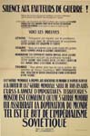

Paix et Liberté | Seeley G. Mudd Manuscript Library, Princeton University
text | design
To view a larger version of a poster, click on the desired image.
Cultivateurs!
30e Anniversaire du Parti Communiste
Il y a 30 Ans
32e Anniversaire des Evenements
Agriculteurs
 Silence aux Fauteurs de Guerre!
Patrie
Français!
Dégonflés!
Deux Témoignages
Ouvriers Communistes
Ouvrier Français
Paysans Attention aux Communistes
Pauvres Girouettes
Paysans! Une Opinion Autorisée
L'Allemagne orientale...
Libérez Thorez
Payé par l'or Soviétique
Travailleurs Français